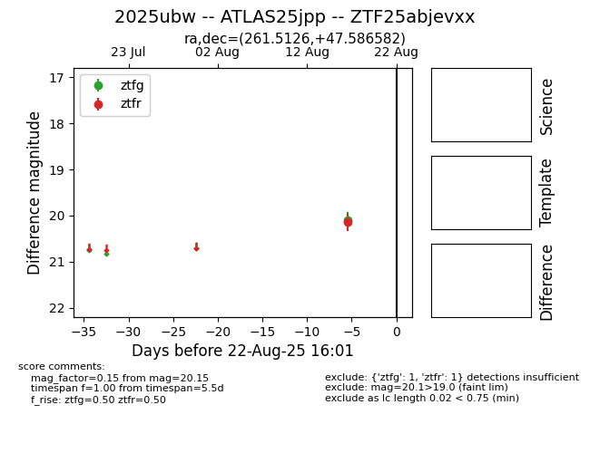

Target 2025ubw at 2025-08-21 10:11, see:
FINK: fink-portal.org/ZTF25abjevxx
Lasair: lasair-ztf.lsst.ac.uk/objects/ZTF25abjevxx
ALeRCE: alerce.online/object/ZTF25abjevxx
TNS: wis-tns.org/object/2025ubw
YSE: ziggy.ucolick.org/yse/transient_detail/2025ubw
alt names
ZTF25abjevxx (ztf,alerce)
2025ubw (tns,yse)
ATLAS25jpp (atlas)
coordinates:
equatorial (ra, dec) = (261.5126,+47.58658)
galactic (l, b) = (73.8818,+33.72170)
photometry
last ztfg=20.10, ztfr=20.15
1 ztfg, 1 ztfr detections
